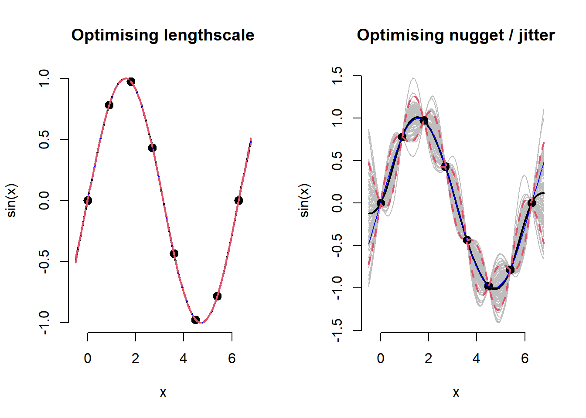
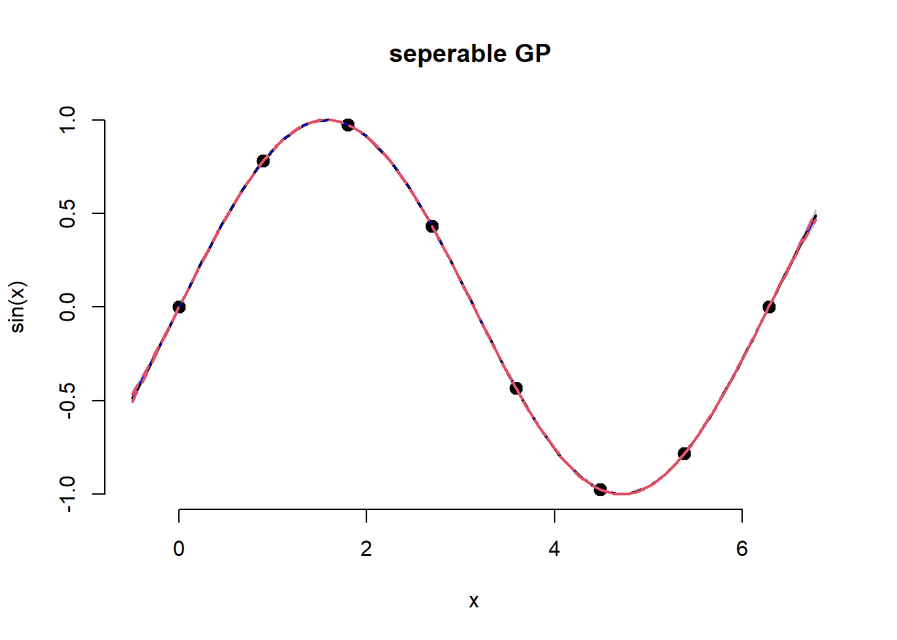
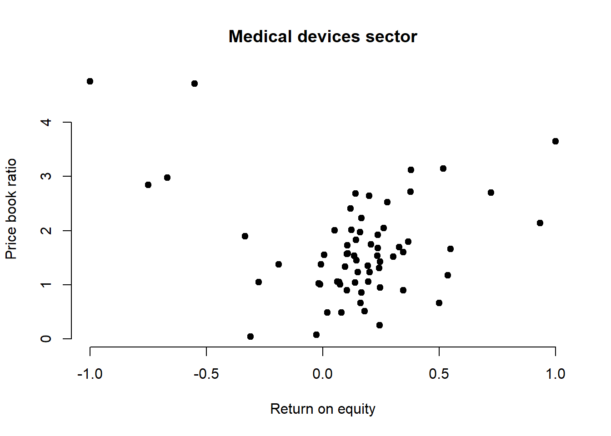
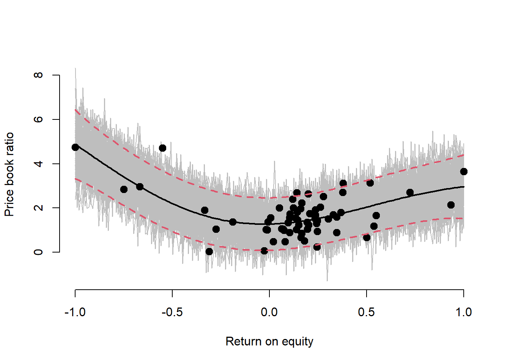

laGPA replication of the Gaussian Process regression implementation from chapter 5 of Surrogates. Application of the same code to real data.
Create some dummy data being an independent and dependent variable, along with a grid of the independent variable values.
# Training data
n <- 8
X <- matrix(seq(0, 2*pi, length=n), ncol=1) # independent variable
y <- sin(X)
# Predictive grid
XX <- matrix(seq(-0.5, 2*pi + 0.5, length=100), ncol=1)
# Nugget / jitter
eps <- sqrt(.Machine$double.eps) newGPNote the parameters:
d: a positive scalar lengthscale parameter for an isotropic Gaussian correlation function (newGP); or a vector for a separable version (newGPsep), and
g: a positive scalar nugget / jitter parameter
are seeded with the darg``` andgarg``` functions.
library('laGP')## Warning: package 'laGP' was built under R version 4.1.3##
## Attaching package: 'laGP'## The following object is masked from 'package:plgp':
##
## distance# Derive sensible parameter ranges
d <- darg(NULL, X)
y[1] <- 1e-3 # negate garg error: Error in check.arg(g) : d$min should be a postive scalar < d$max
g <- garg(NULL, y)
par(mfrow=c(1,2))
for(parm in c('d','g')) {
# GP
gpi <- newGP(X, y, d=d$start, g=g$start*0.5, dK=TRUE)
#mle <- mleGP(gpi)
mle <- mleGP(gpi, param=parm, tmin=ifelse(parm == 'd', d$min, g$min), tmax=ifelse(parm == 'd', d$max, g$max))
p <- predGP(gpi, XX)
YY <- mvtnorm::rmvnorm(100, p$mean, p$Sigma)
q1 <- p$mean + qnorm(0.05, 0, sqrt(diag(p$Sigma)))
q2 <- p$mean + qnorm(0.95, 0, sqrt(diag(p$Sigma)))
# Plot
matplot(XX, t(YY), type="l", col="gray", lty=1,
main = paste0("Optimising ", ifelse(parm == 'd', 'lengthscale', 'nugget / jitter')),
xlab="x", ylab="sin(x)", bty = "n")
points(X, y, pch=20, cex=2)
lines(XX, p$mean, lwd=2)
lines(XX, sin(XX), col="blue")
lines(XX, q1, lwd=2, lty=2, col=2)
lines(XX, q2, lwd=2, lty=2, col=2)
deleteGP(gpi)
rm(mle)
}
newGPsepA separable GP, the lengthscale parameter is allowed to decay at differing rates dependent on the input data. This is an anisotropic, rather than isotropic model.
gpi <- newGPsep(X, y, d=d$start, g=g$start*0.5, dK=TRUE)
mle <- mleGPsep(gpi, param='both', tmin=c(d$min, g$min), tmax=c(d$max, g$max))
p <- predGPsep(gpi, XX)
YY <- mvtnorm::rmvnorm(100, p$mean, p$Sigma)
q1 <- p$mean + qnorm(0.05, 0, sqrt(diag(p$Sigma)))
q2 <- p$mean + qnorm(0.95, 0, sqrt(diag(p$Sigma)))
# Plot
matplot(XX, t(YY), type="l", col="gray", lty=1,
main = "seperable GP ",
xlab="x", ylab="sin(x)", bty = "n")
points(X, y, pch=20, cex=2)
lines(XX, p$mean, lwd=2)
lines(XX, sin(XX), col="blue")
lines(XX, q1, lwd=2, lty=2, col=2)
lines(XX, q2, lwd=2, lty=2, col=2)
deleteGPsep(gpi)
rm(mle)The procedures above are now applied to real data, that being an estimation of stock valuation based on fundamental data.
library(romerb)
data("stock_data")
fundamental_raw <- stock_data
rm(stock_data)
# Medical devices sector only
df <- fundamental_raw[fundamental_raw$sector == 7, ]
df$log_mkt_cap <- log(df$mkt_cap)
df$log_book <- log(-df$total_equity_cln)
df$roe <- -df$roe
df <- df[df$date_stamp == as.Date('2021-06-30'), c('log_book','log_mkt_cap','log_pb','roe','leverage')]
# nugget / jitter
eps <- sqrt(.Machine$double.eps)
# Training data
X <- matrix(df$roe)
y <- matrix(df$log_pb)
# Predictive grid
XX <- matrix(seq(min(X), max(X), length=200), ncol=1)
# Plot
plot(X, y, main = "Medical devices sector",
xlab = "Return on equity", ylab = "Price book ratio",
pch = 19, frame = FALSE)
d <- darg(NULL, X)
g <- garg(NULL, y)
gpi <- newGPsep(X, y, d=d$start, g=g$start*0.5, dK=TRUE)
mle <- mleGPsep(gpi, param='both', tmin=c(d$min, g$min), tmax=c(d$max, g$max))
p <- predGPsep(gpi, XX)
YY <- mvtnorm::rmvnorm(100, p$mean, p$Sigma)
q1 <- p$mean + qnorm(0.05, 0, sqrt(diag(p$Sigma)))
q2 <- p$mean + qnorm(0.95, 0, sqrt(diag(p$Sigma)))
# Plot
matplot(XX, t(YY), type="l", col="gray", lty=1,
xlab = "Return on equity", ylab = "Price book ratio", bty = "n")
points(X, y, pch=20, cex=2)
lines(XX, p$mean, lwd=2)
lines(XX, q1, lwd=2, lty=2, col=2)
lines(XX, q2, lwd=2, lty=2, col=2)
deleteGPsep(gpi)
rm(mle)Functions creating dummy data. Useful for model testing.
tpg vignette, refer page 3 for dummy data function
Gold
price function from the GPfit doucmentation.
Other Gaussian Process packages